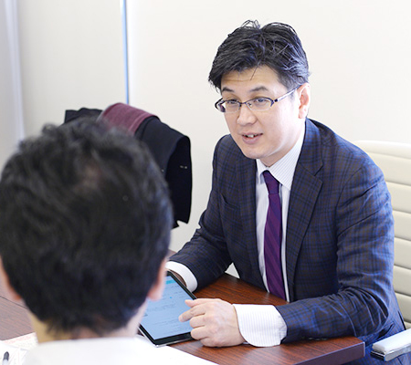
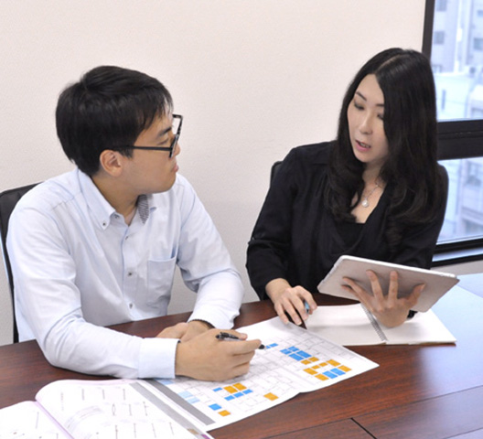
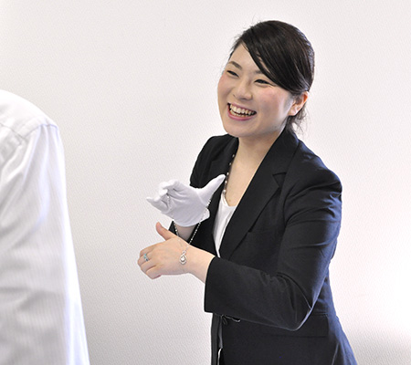
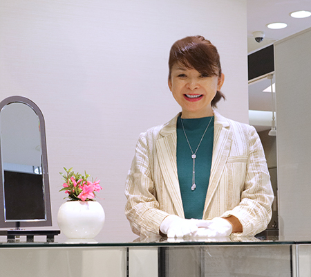

Voice
社員の声
催事
「All For One」の企画営業

- ケイズ・インターナショナルは、ダイヤモンドを中心に石の買い付けから始まり、デザインや加工・製造まで全て自社で携わっている分、ひとつのジュエリーが生み出される「奇跡」と「感動」を、スタッフ全員が日常に目の当たりにしています。
- だからこそ、その「たったひとつのジュエリー」との出会いがお客様にとって「最高の幸せ」になるように、ケイズ・インターナショナルでは、広告部・販促部・商品部・経理部・営業部、全ての部署がひとつとなってお客様との出会いを演出します。広告部・販促部・商品部・経理部は、その役割の中でプロフェッショナルな仕事を行います。
- そして、私たち営業部は、そのプロフェッショナルな仕事の各ピースをひとつのビジネスとしてジョイントさせ、販売先である百貨店へ提案して行きます。
- 営業が、ひとつのビジネスとして全国の百貨店や、その先にいるお客様へジュエリーを提案出来るのは、その背景にケイズ・インターナショナルのスタッフひとりひとりのジュエリーに対する情熱とプロフェッショナルな仕事があるからです。
- 私は、ケイズ・インターナショナルの営業として、全てのスタッフへの感謝の気持ちを忘れず、全てのスタッフの情熱を背負った会社の広告塔として、ゆるぎない情熱とチャレンジ精神を持ち続けて行こうと思います。
催事のトータルプロデュース

- 主にお取り組み頂いている百貨店様へ、販売場所の提案をしていきます。そのために、催物の企画、集客の為の広告作り。現場では販売のサポート。自分で接客する事も多くあります。
- 現場に自身が立って接客する事によって、次の提案や、新しい商品の手配などを行います。
- 弊社では、百貨店での催物がメインとなるので、お取り組み先との話の中からニーズを聞き出し、それに応えた催物の企画を立てて、さらなる新規顧客様の獲得を目指します。
- 営業職の仕事は売上を作ることですが、お客様がいなくてはその売り上げは作れません。
- 女性の永遠の憧れでもあるジュエリーを通して、お客様一人一人に満足して頂き、特別な空間を楽しんで頂くことを一番に考えています。
- 非日常空間で、その方だけのオンリーワンを提案し続ける事こそ本当の役割です。
- その為に、季節ごと企画ごとのおもてなしやサプライズを演出。
- お客様との対話の中からスタイルとの環境を聞き出し、一人一人に合わせた商品提案。
- 他の服飾品と違い永く使って頂く物だからこそ全てに信頼関係が大切だと考えます。
感動を共有できる空間

- 「お客様の魅力を最大限に引き立たせるジュエリーをご提案すること」 ― 時にはお客様の思ってもみないデザインのジュエリーをご紹介させていただく事もあります。
- 身に付けてみて初めて完成されるものだからこそ、鏡を覗き込んだ時にお客様と「驚き」と「感動」を共有することができます。
- ケイズ・インターナショナルの営業は、お客様の御用聞きではありません。一つ一つの出会いの中で、何がお客様にとって最大限の幸福に繋がるのかを常に考え、ご提案をさせていただいております。
- お客様にとって、そのジュエリーとの出会いが掛け替えのないものとなることを願って、全社員の想いとの架け橋となるよう努めています。
- また、私たちは各地の百貨店に催しで出入りしているため、常に新しい出逢いの中で販売をしています。毎日同じではない場所、初めてお話しさせて頂く人、正解の道筋がないため、考えることは尽きません。
- 日々の環境が成長のチャンスであり、新しいアイディアを取り入れやすいのがケイズ・インターナショナルの土壌です。
- ジュエリーを通して、どのような喜びをお客様にお届けできるのか。常にお客様の気持ちに寄り添って、共に居られる存在でありたいと考えています。
ジュエリーSAKAJI
ジュエリーを通して人間関係を築く

- 私たちジュエリーSAKAJIのスタッフは、店頭にいらしたお客様がジュエリーをもっと身近に感じて頂けるよう、気軽にジュエリーに触れたり着けたりして楽しんでいただいています。
- また、高級感のある店内で、ゆっくりと特別な時間を過ごして頂けるようなおもてなしを心がけています。
- そのような毎日の中、私たちとお客様との親密度がどんとんと深まってゆき、最近は「今日も来たよ！」と笑顔でご来場されるお客様が増えてきて、本当に嬉しくなります。
- 私たちジュエリーアドバイザーの仕事は、ジュエリーを販売する仕事ではなく、ジュエリーを通して、お客様との信頼関係や人間関係を築いてゆく仕事だと思っています。
- 今日はどういう出会いがあるだろうか？
- 毎日、そんなワクワクした気持ちで、お客様をお迎えしています。